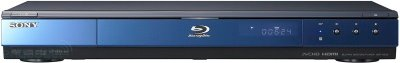
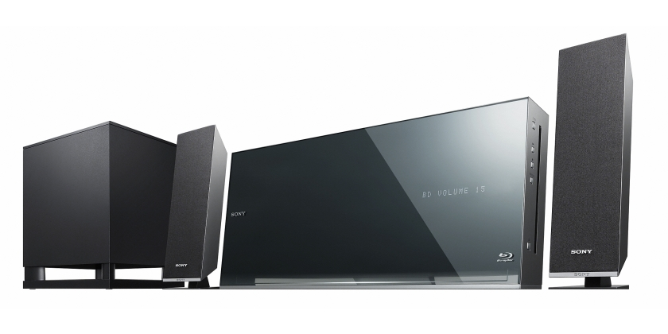

Donde estamos

Sovitel Electrónica, servicio Sony Bilbao. Las marcas y logos son propiedad de sus titulares y están protegidos por las leyes del copyright.
Técnología Bu-Ray
Los productos de Sony con tecnología Blu-ray Disc desatan la nueva generación de entretenimiento en casa.
Si le gustan las películas, los juegos o la música, no hay nada comparable a la potencia de Blu-ray Disc. Parece un DVD... pero las diferencias son notables.
Blu-ray Disc permite almacenar hasta cinco veces el contenido de un DVD estándar, por eso es lo último para disfrutar de largometrajes con la mejor calidad de imagen de alta definición, un impresionante sonido digital multicanal y gran cantidad de extras interactivos.
Blu-Ray Sony 2009
En todas las navidades uno de los productos estrella será sin ninguna duda el reproductor de Blu-Ray de Sony. De hecho el Sony BDP-S350 fue el tercer producto más vendido en toda América en el comienzo de la temporada de compras navideñas, incrementando sus ventas en un 147%.
En Europa se presentó este modelo en agosto y es uno de los abanderados de Sony en Blu-Ray. Proporciona una completa experiencia de imagen en alta definición para quien exija las máximas prestaciones de su HDTV. Gracias a la conexión HDMI y los menús flotantes de los discos Blu-ray, estos reproductores son una estupenda elección para el entretenimiento familiar en Navidad.

Cine en casa BRAVIA Theatre
Déjese seducir por el encanto que le proporciona los sistemas de cine en casa BRAVIA Theatre de Sony. Conseguirá alcanzar en su hogar de un completo sonido Surround Full HD, que junto a Blu-Ray Disc le harán disfrutar y sumergerse en la acción de los juegos de su Playstation, o simplemente vivir una experiencia única de cine en casa con nuestras películas favoritas.


Servicio Técnico Oficial Sony
SOVITEL ELECTRÓNICA
Tellagorri nº 10
48012 BILBAO
(zona Basurto)
94 4275617